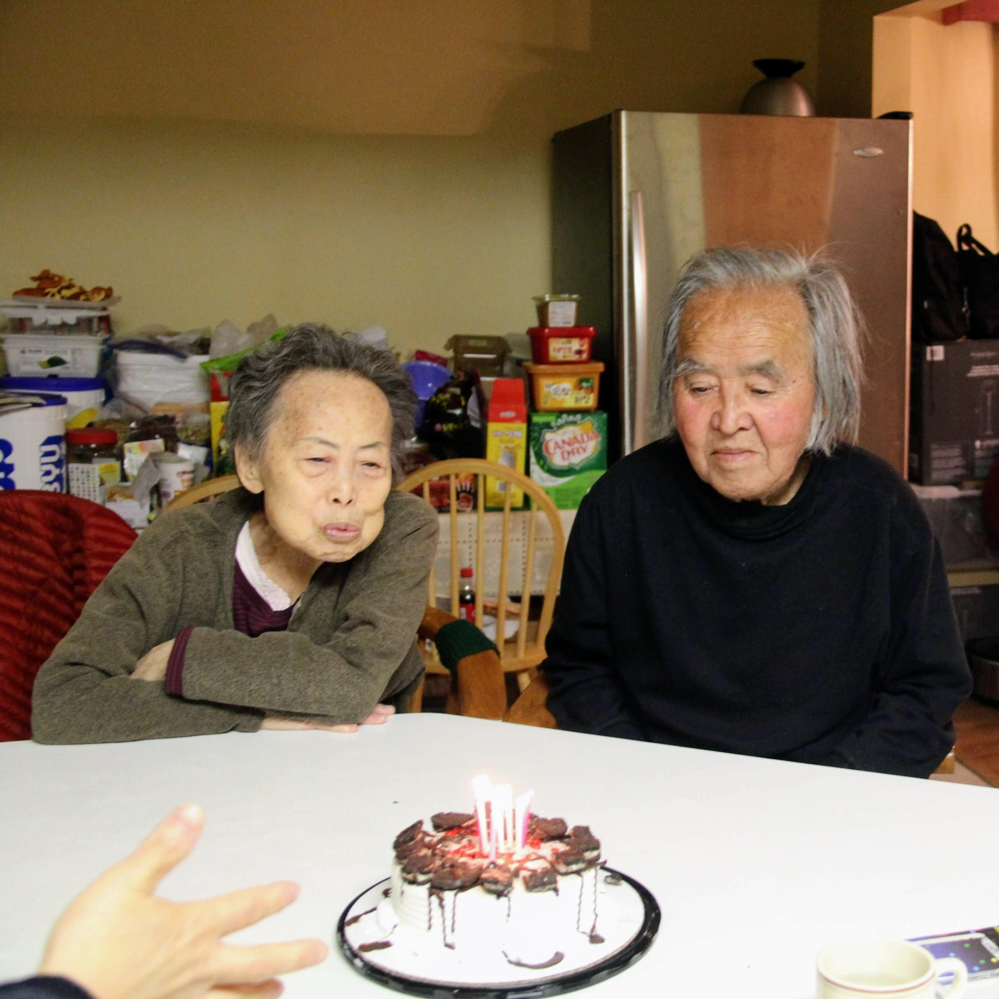
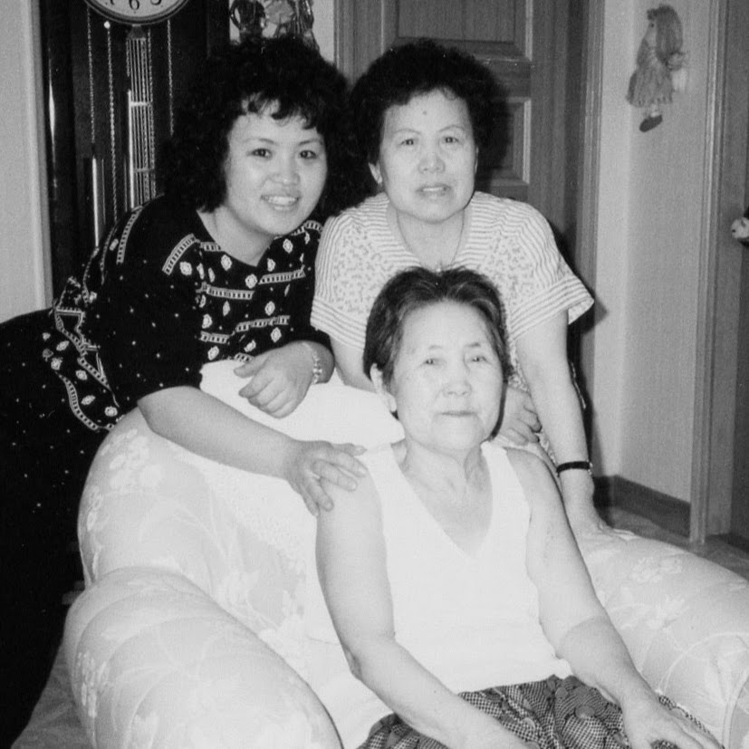
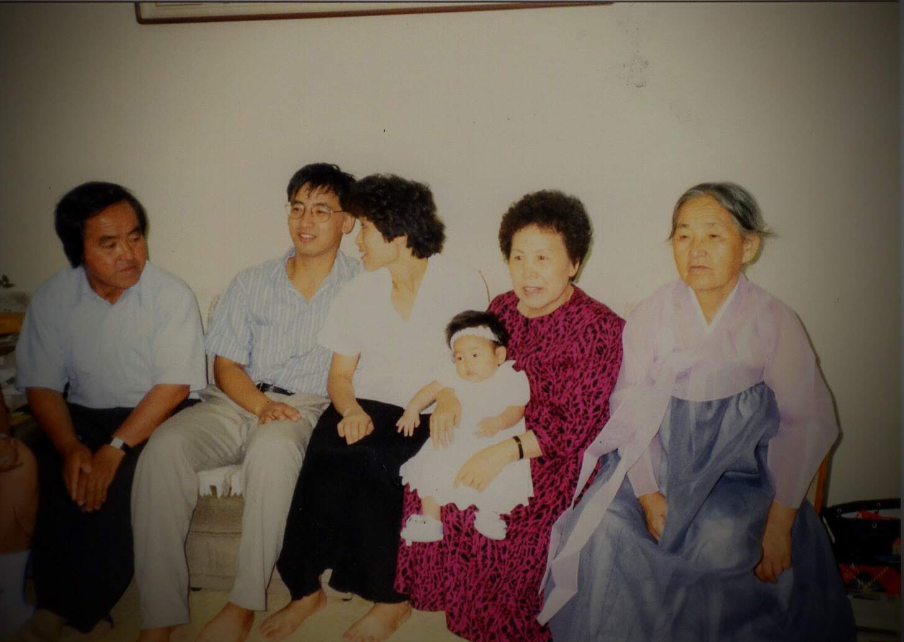
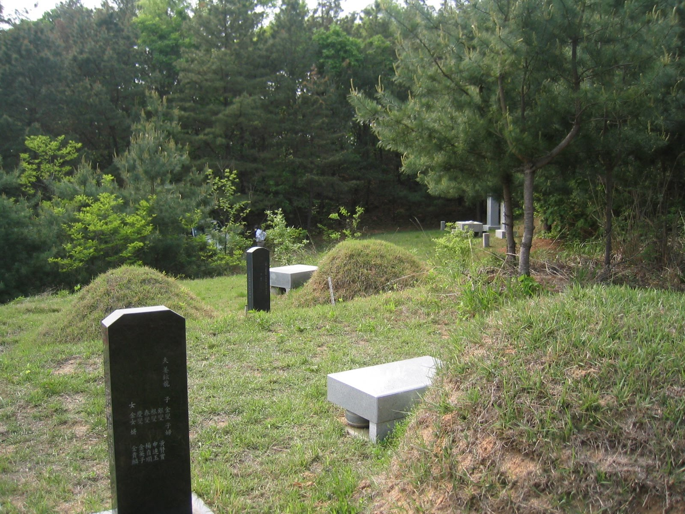
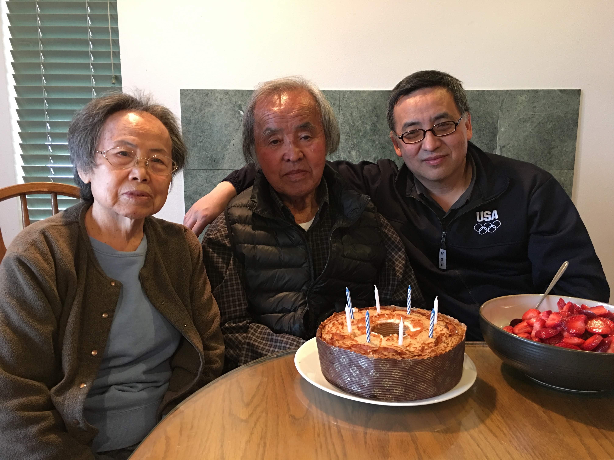
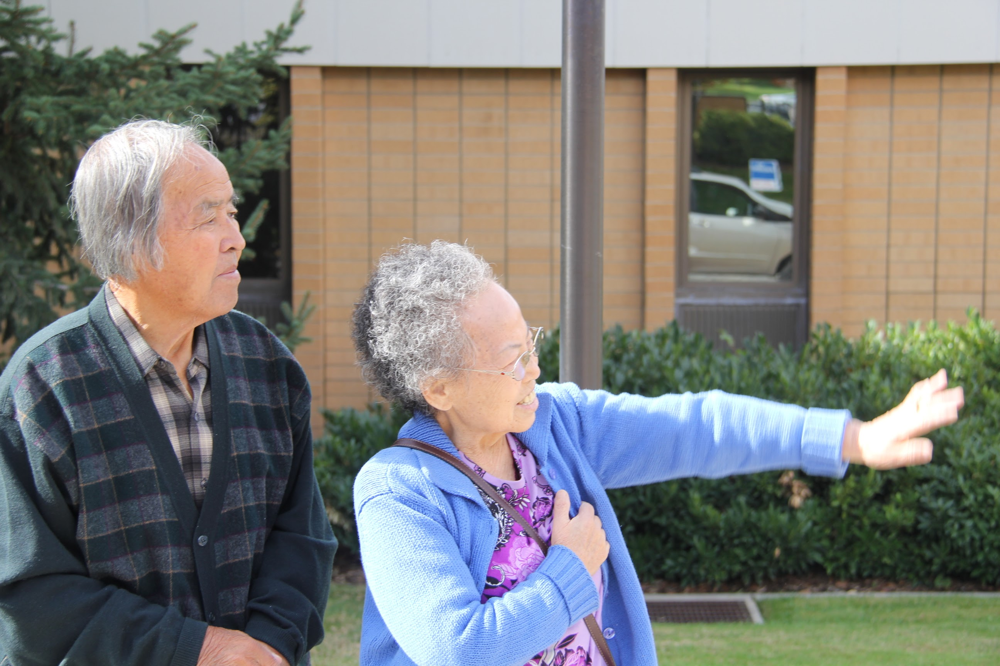

Want to thank my parents for taking away the fear and stigma associated with getting old and facing death.
Birth Week
Mom and dad were born this week.
Even though we know their birthdays were Lunar Calendar based, we remembered their lunar birthdate on the Solar Calendar Date.
For example, my dad’s birtday is listed as February 12th, which would be March 11th. Still we had the celebration on February 12th.
Likewise, my mom’s would be celebrated on February 20th, instead of March 26th.
[My mom’s birthday would be 26 March 1932, and my dad’s would be 11 March 1930]

Want to thank my parents for taking away the fear and stigma associated with getting old and facing death.
Our family was small growing up, on my mother and father’s side. Most family members stayed in North Korea, because everyone thought the War and the separation will be short lived.
Growing up, I saw funeral procession on the street or on TV for one of the relatives of the last monarch.
Most everyone I knew were young and vibrant.
Then our family moved to United States, where I was further removed from pain and suffering associated with death. After turning 20 did I learn that some of the relatives have passed away.
Maternal Grandmother (5 February 1914 - 25 November 1999)

First death of a family member, that I attended, was in the year I turned 37.
At the time I was working in Daegu and my grandmother lived in Incheon.
My maternal grandmother passed away at aged 87, who lived without her husband for nearly 60 years, after suffering from dementia. My aunt lovingly took care of her at home and she looked happy and well taken care of until her passing.
Felt the sorrow of 4 surviving sisters. My mother is the oldest and one that knows, intimately challenges of growing up fatherless. Adding to the sorrow was that her only son passed away when he was in his 40s.
Took on some of the male role that would be handled by male heirs. Felt the sorrow of family members as she was laid to rest.
The ceremony was done according to Christian traditions.
Paternal Grandmother (20 July 1911 - 2 May 2003)

My father’s mom, passed away a year after we returned to US.
My father’s youngest brother and his wife, took care of her for nearly 30 years. (it helped that uncle’s in-laws were trained nurses, they took care of grandmother before she became ill)
Similar to Kim Grandma, my grandmother also lost her husband, and lived alone for nearly 55 years.
My grandmother loved to farm and hike nearby mountains. She passed away at age 92. It was thought that, had she lived in the country, she would have lived another 10 years.
Through family connections, they were able to secure a proper burial place in the mountain. This is important in old Korean culture.
Was able to visit the grave site, two years later.

My Parents
Both of my parents lived to be 90 years of age.
I am grateful that my parents, not only lived a full, long life but that they were able to communicate to us, until last days of their sojourn.
They were independent until the end.
They expressed their love and appreciation.

There were no fear of passing through to the next life. Only sorrow at the separation from loved ones.
Learned through their lives that living and passing on is both necessary yet beautiful part of the Plan. The Plan that enables us to be born again.
No longer fearful about the as-of-yet not revealed part of life and death.
For my parents and my grandmothers have shown how to live courageously and face death peacefully.
